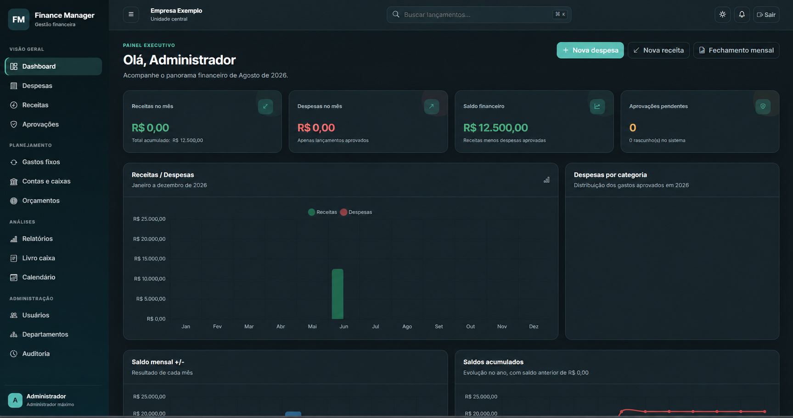
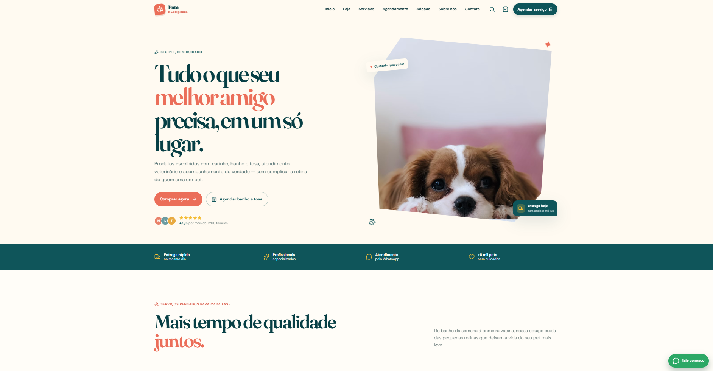
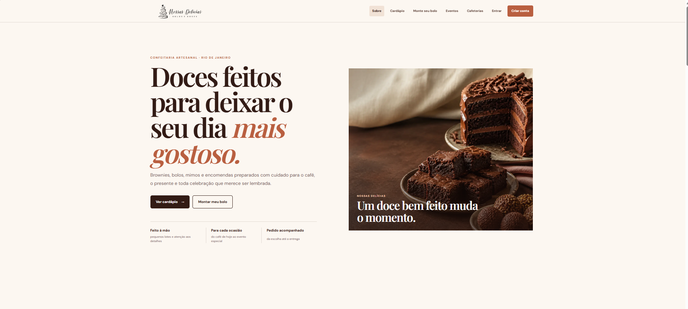

01 / Presença
Sites personalizados
Seu negócio bem apresentado. Seu cliente a um passo de entrar em contato.
- Identidade da sua marca
- Produtos, serviços e informações claras
- Experiência para celular e computador
Tecnologia sob medida para o seu negócio
Criamos sites personalizados, sistemas financeiros e automações para você apresentar melhor sua marca e cuidar da rotina com mais tranquilidade.
Você traz a necessidade. A gente ajuda a encontrar o caminho.
O que fazemos
Para quem quer ser encontrado, organizar o dinheiro ou simplificar o trabalho. Começamos pelo que seu negócio precisa.
01 / Presença
Seu negócio bem apresentado. Seu cliente a um passo de entrar em contato.
02 / Controle
Mais clareza sobre o dinheiro e mais organização no dia a dia.
03 / Tempo
Menos tarefas repetidas. Mais tempo para cuidar do que importa.
Tem uma necessidade diferente? Também desenvolvemos soluções de dados, integrações e projetos específicos.
Explorar os serviçosSistemas financeiros
Seu financeiro pode ser mais fácil de acompanhar. Desenvolvemos controles de receitas, despesas, contas e relatórios, adaptados à forma como você trabalha.

Nosso trabalho, na prática
Conheça propostas e projetos que mostram como transformamos uma necessidade em uma experiência digital.

Site e cardápio para cafeteria
Uma proposta de site com a identidade da cafeteria e um cardápio fácil de explorar.

Loja e agendamento para pet shop
Produtos, carrinho e agendamento em uma demonstração de experiência para pet shops.

Catálogo e pedidos para confeitaria
Uma plataforma que reúne catálogo, pedidos e montagem de bolos para uma confeitaria.
Sites, gestão financeira, planilhas e análise de dados.
Explorar todos os projetosO que podemos criar para você
Além do site, construímos ferramentas para a operação. Explore as possibilidades e os exemplos do nosso portfólio.
Vitrine de produtos, cardápio digital, pedidos e integrações de pagamento conforme o projeto.
Agenda, cadastro de clientes, histórico de atendimento e lembretes definidos para a sua operação.
Planilhas e sistemas que conectam insumos, receitas, custos, margem e vendas.
Indicadores de vendas, filtros por período e relatórios a partir dos dados do seu negócio.
Cada solução é contratada sob medida. Os exemplos mostram projetos e demonstrações; funcionalidades e integrações são definidas na proposta.
Simples desde a primeira conversa
Não precisa conhecer tecnologia. Precisa só contar o que gostaria de melhorar.
01
Conversamos sobre seu negócio, suas dificuldades e o que faz sentido resolver primeiro.
02
A proposta deixa claros o que será feito, o prazo, o investimento e as condições de suporte.
03
Apresentamos o trabalho, validamos o combinado e orientamos o uso na entrega.
Unimos desenvolvimento, dados e atenção à segurança para criar soluções que façam sentido para quem usa.
Conte seu próximo passo
Pode perguntar
Algumas respostas antes da nossa primeira conversa.
Pode chegar com uma ideia, uma referência ou um problema da rotina. Vamos entender como seu negócio funciona e ajudar a definir uma primeira entrega útil.
Sim. Um site, um catálogo ou um controle financeiro pode ser o primeiro passo. O tamanho do projeto acompanha a sua necessidade, e as próximas etapas podem ser planejadas depois.
Depende do que será construído. Antes de começar, a proposta apresenta funcionalidades, etapas, prazo e investimento. Hospedagem, licenças e serviços externos são informados quando necessários.
Os sites são desenvolvidos para se adaptar ao celular e ao computador. Nos sistemas, os recursos e as telas são planejados de acordo com quem vai usá-los.
Na proposta, combinamos a entrega, a orientação de uso e as condições de suporte. Manutenção, novas funções e acompanhamento contínuo podem ser definidos conforme a necessidade.
Vamos conversar
Conte sua ideia ou o que está dificultando a rotina. A gente ajuda a definir por onde começar.
Primeiro, entendemos. Depois, propomos.